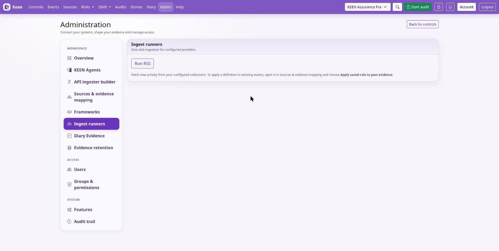

Administering Keen
Schedules, pauses and metric submissions
Chapter 7 of 30
Scheduling, manual runs and cursors
Collection runs on a timetable kept by Celery beat and carried out by the worker. This chapter explains that timetable, how to run a source by hand, how to pause a source type safely, and what a cursor is before you touch one.
Celery beat schedules recurring ingestion and maintenance work; the worker executes it. Keep one active beat scheduler per installation unless the deployment explicitly supports coordinated schedulers, so nothing is scheduled twice. When a scheduled action is missing, check beat's enqueue logs and the worker's execution logs together.
Run a source by hand
Admin → Imports & adapters starts an enabled source outside its normal schedule. Read the result, then inspect the Events list. A successful task can collect zero new events; compare the source, upstream data, time range and cursor before changing configuration.


Cursors
A cursor records how far a collection has progressed, and its meaning varies by adapter. Most of the time you never touch one.
Before repairing a cursor, stop concurrent ingestion, record the current cursor, take a database backup and understand the adapter's lookback and pagination semantics. Rewinding can reprocess data; advancing can permanently skip upstream history. Resume with a bounded run and verify counts and timestamps. There is no universal safe cursor-reset command.
Going deeper: cron minutes and intervals
Cron minute expressions select minutes within an hour; elapsed intervals longer than an hour require an interval schedule. Check the configured schedule and task logs when diagnosing missing or delayed runs.
Pause and resume source ingestion
Open Sources & evidence mapping and expand Source catalogue and collection health. Each enabled source type has a Pause ingestion button that applies across every connection of that type and all frameworks. Its state is stored in PostgreSQL and shared by the API and workers.
Pausing preserves collected evidence, mapping rules, credentials and collection cursors. Scheduled and manual polling runs skip collection while paused, and a run already in progress may finish. Resume ingestion allows subsequent runs; use the manual runner for an immediate poll.
Going deeper: what pausing means for each kind of source
| Source type | While paused |
|---|---|
| API ingesters | Custom collectors and previews stop. Jobs queued before the pause are cancelled before fetching without consuming their failure budget; cursors are unchanged. Enabled collectors schedule again after resume. |
| Keen Agent | OTLP log intake stops; agent heartbeats continue. Agent queues remain subject to their configured capacity and retention. |
| Webhooks | Generic evidence and effectiveness-metric intake stops. Paused push endpoints return HTTP 503 with Retry-After: 60; senders must retain and retry data. |
Resuming does not enable an adapter disabled in installation settings, or re-enable an individual custom API collector disabled after failures. Historical catch-up depends on each upstream service and the adapter's cursor and lookback limits. Manual diary evidence and ordinary ISMS editing remain available throughout.
Configure measurement submissions
Measures can receive their values from a reporting job through a webhook. Configure this provider in Webhooks using the configuration editor or administrator-managed YAML:
providers:
isms_metrics:
secret_header: X-KEEN-Metrics-Secret
secret_env: KEEN_METRICS_SECRETSet the named secret in the Keen API environment and provide it securely to the reporting job. The measure's copyable examples send JSON to /api/v1/webhooks/isms/effectiveness-metrics/{metric_key}. Keep metric keys stable, send the observed numeric value and use the correct framework and unit. Each accepted submission creates an entry, so the reporting job should account for duplicate submissions after uncertain network failures.